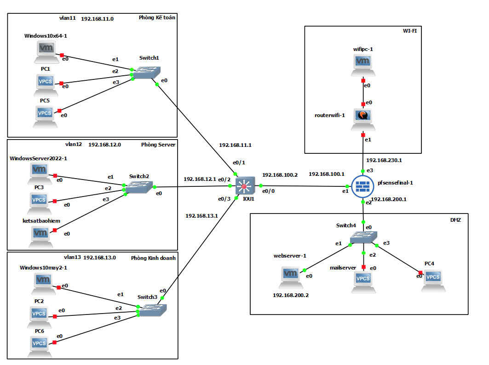
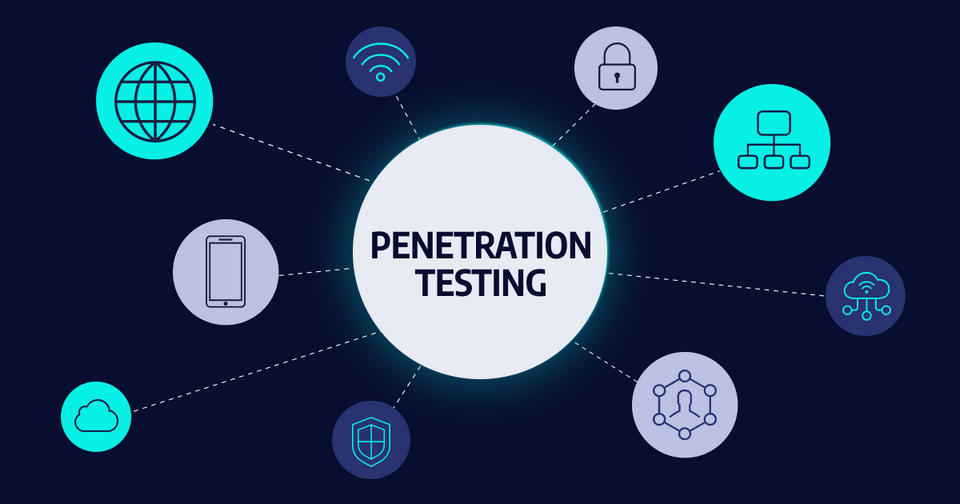

Project
Google Cloud Platform
Deployed a personal website on Google Cloud Platform (GCP) using a VM instance. Configured a custom domain and MySQL database within GCP. Installed Suricata as an Intrusion Detection System (IDS) on the VM to monitor traffic and detect potential threats. Used crontab to schedule regular log backups for security auditing.
PDF Report Youtube PlaylistBuild Security System Administration & Enterprise Security Policies
BBuild Security System Administration & Enterprise Security Policies Designed and implemented a DMZ (Demilitarized Zone) network to enhance perimeter security. Configured and managed pfSense firewall for traffic filtering, NAT, VPN, and intrusion prevention. Deployed and administered Windows Server for centralized user and resource management (Active Directory, Group Policy). Implemented Wazuh for centralized log collection, intrusion detection, and security monitoring. Set up a honeypot environment to detect and analyze malicious activities. Developed and enforced enterprise security policies to ensure compliance and data protection.
PDF Report 2nd PDF Report Youtube PlaylistPenetration testing
Deployed a personal website on Google Cloud Platform (GCP) using a VM instance. Configured a custom domain and MySQL database within GCP. Installed Suricata as an Intrusion Detection System (IDS) on the VM to monitor traffic and detect potential threats. Used crontab to schedule regular log backups for security auditing.
PDF ReportSecure Real-Time Chat Application using Java Netty

Developed a real-time chat application in Java using the Netty framework and integrated AES-CBC encryption to ensure secure data transmission. The application supports multiple features: private and group chats, weather information lookup, and subdomain scanning. Implemented a secure key exchange mechanism and digital signature verification using SHA256withRSA. Built a custom communication protocol and designed the Graphical User Interface (GUI) with Java Swing.
PDF Report Youtube Playlist Github